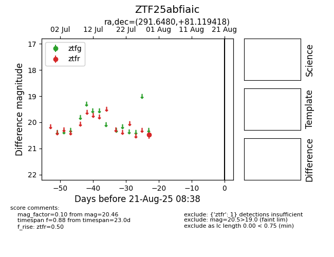

Target ZTF25abfiaic at 2025-08-21 08:38, see:
FINK: fink-portal.org/ZTF25abfiaic
Lasair: lasair-ztf.lsst.ac.uk/objects/ZTF25abfiaic
ALeRCE: alerce.online/object/ZTF25abfiaic
alt names
ZTF25abfiaic (ztf,alerce)
coordinates:
equatorial (ra, dec) = (291.6480,+81.11942)
galactic (l, b) = (113.2057,+25.43746)
photometry
last ztfr=20.46
1 ztfr detections
